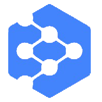
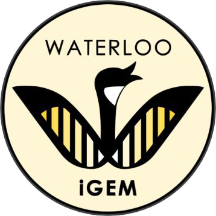
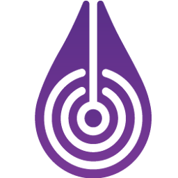
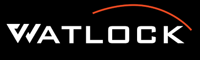
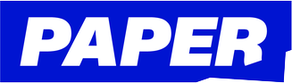

Data Science Developer Co-op | NuraLogix Corporation
may, 2022 - present |

- Utilized ML models with various methods (SVM, KNN) to improve video signal feature-labeling and analysis.
- Extracted skin tone features from images in various colour spaces with OpenCV, using KMeans algorithm.
- Provided prompt results to data cleaning and organizing tasks with automated scripts using pandas, NumPy.
- Detected outliers with statistical methods to improve peak-finding behaviour within flagship application.
Math & Modelling Team Member | iGEM Waterloo 2022
february, 2022 - present |

- Modelling effects of genetic modification of Saccharomyces cerevisiae for increased terpene production.
- Interpreting and creating kinetic and constraint-based models of S. cerevisiae Acetyl-CoA metabolism.
- Developing methods for terpene product extraction in wet-lab environments.
Soft Robotics Research & Design Engineering | Waterloo Microfluidics Laboratory
september, 2021 - december, 2021 |


- Designed innovative soft robotics hardware using SolidWorks, EagleCAD, and AutoCAD software.
- Utilized EagleCAD and Fritzing to design PCBs for two independent projects.
- Carried out iterative, comprehensive testing with hand-manufactured, high-fidelity prototypes in-lab.
- Assisted in publications to soft robotics-focused journals and edited patent aimed for overseas markets.
Software Development Co-op | Ford Motor Company
may, 2020 - august, 2020 | january, 2021 - april, 2021 |

- Explored and developed an IDL-based Python service using ApiGear for signal simulation in Unreal Engine.
- Designed and demonstrated a native API using Franca IDL for list paging implemented in C/C++.
- Utilized Android NDK toolchains to cross-compile middleware for Raspberry Pi 3 target for 2 PoCs
- Assisted with unit test validation during project porting to AOSP by executing board bring-up and debug tasks.
- Created non-compliance dashboards using JQL, SQL, and Jira macros for issue tracking and management.
Math & Modelling Team Member | iGEM Waterloo 2021
february, 2021 - november, 2021 |
- Designed microfluidics capillary pump to provide fluid flow to power a lab-on-a-chip ADHD diagnosis tool.
- Modelling processes for a lateral flow assay device using Matlab and SolidWorks.
- Analyzed publications focused on aptamer design and comparisons between various analytes.
- Received Silver Award by iGEM organizers following presentation at annual Jamboree.
Mechanical Team Member | Waterloo Airlock Team
september, 2019 - august, 2021 |

- Created airlock prototype for UBC Mars Competition using SolidWorks for simulation and modelling in accordance with reports.
- Referenced design goals such as solar resistance to create prototype and obtain quotes from various suppliers.
- Verified assemblies to be manufactured, presented design at the UBC Mars Competition.
Math & Science Tutor | Paper Education Company
october, 2021 - present |

- Teaching students in math and science topics from elementary to post-secondary levels through text-based communication.
- Manage 3+ students at a single time while providing Socratic guidance and clear communication.
- Working as a member of the tutor team with 1000+ tutors, offering assistance when needed.